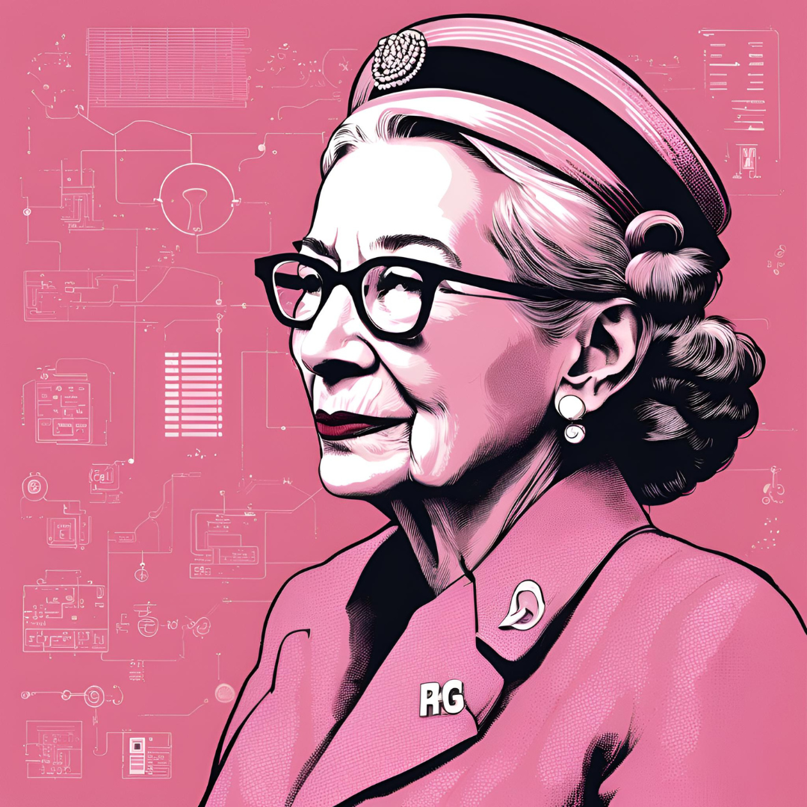

Grace Hopper
(A Rainha da programação)

Grace Hopper, carinhosamente apelidada de 'Rainha da Programação', não era apenas uma oficial da Marinha dos EUA ou uma professora universitária. Ela foi uma verdadeira pioneira no campo da computação. Desenvolveu o primeiro compilador, uma ferramenta revolucionária que traduzia código escrito em linguagem humana para a linguagem de máquina, facilitando imensamente o desenvolvimento de software. Além disso, sua liderança na criação da linguagem de programação COBOL abriu portas para aplicações de computação em negócios e governos, impactando a maneira como vivemos e trabalhamos até hoje. Grace mostrou ao mundo que a inovação não tem limites e que as mulheres podem liderar mudanças tecnológicas significativas.